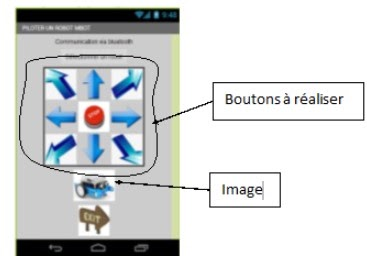
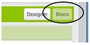
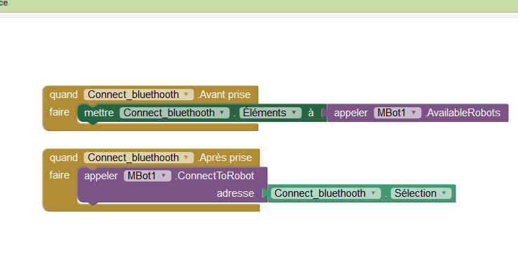
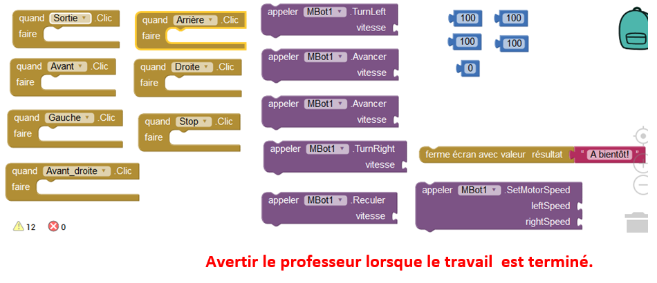

Séance 2: Comment piloter un objet technique avec un smartphone ?
Séquence XX : Comment piloter un objet technique avec un smartphone ?
Séance 2 : Créer une IHM
Mise en situation :
Un objet connecté est un objet électronique connecté sans fil, qui partage des données avec d’autres appareils électroniques tels que les ordinateurs, les tablettes électroniques, les Smartphones ou encore les phablettes.
Problématique : Comment réaliser une application pour smartphone?
Hypothèses :
Travail à effectuer :
1 / Vous allez réaliser une application pour Android qui permettra de commander un Mbot à distance.
Pour cela, l’application devra permettre :
De se connecter à un robot en mode Bluetooth
Piloter le robot selon 8 directions
D’arrêter le robot à tout moment
Quitter le mode connecté
La séance se décomposera en trois parties :
· La réalisation de l’interface homme machine,
· L’écriture du code du programme.
· Le test de l’application
L’interface Homme Machine :
Les différentes étapes :
Téléchargez le fichier commande_mbot.aia
Se connecter à l’application App Inventor : code.appinventor.mit.edu
Ouvrir le fichier : commande_mbot.aia
Projets
Importer projet de mon ordinateur
Parcourir
Choisissez le fichier commande_mbot.aia de la destination correspondante
3. Réaliser la partie design de l’application
Après avoir vu la vidéo « App Inventor (Design)», et en vous aidant du fichier « Appinventor_design » vous réaliserez l’interface Homme Machine (IHM) suivante :

3.L’écriture du code :
Réaliser la partie blocs de l’application
Pour réaliser la programmation des touches de l’interface vous devez utiliser la partie « blocs »

1 / Configurer la « Connexion bluetooth »

2/ Configurer les 8 touches de déplacement, le bouton « Stop » et le bouton « Sortie » à l’aide des blocs correspondants :
Aidez du document ressource « Déplacer le robot »

4.Le test de l’application sur le smartphone :
1. Générer le fichier à installer :
*Dans AppInventor, cliquer sur « Construire » puis « Donner le code QR pour fichier apk ».
*L'application se construit et génère un QRCODE
2. Installer l’application sur le smartphone :
Télécharger et installer un lecteur de QR code sur le playstore ou l’application « MIT AI2 Companion »
Ouvrir l'application "MIT AI2 Companion" ou le lecteur de QR code de son Smartphone et scanner le QR code, autoriser l'installation de l'application et ouvrir.
3. Tester l’application :
1- Mettre en service le Mbot
2- Cliquer sur ‘Sélectionner un robot’
3- Lorsque la connexion est réalisée, utiliser les boutons pour diriger le Mbot selon les différentes directions.
4- Valider le fonctionnement de votre application avec le professeur.
4. Validation des hypothèses
🧠 Teste tes connaissances
Réponds aux questions puis clique sur « Vérifier » — la correction s'affiche aussitôt.
1. D'après la mise en situation, qu'est-ce qu'un objet connecté ?
2. Quel logiciel est utilisé pour réaliser l'application Android qui commande le Mbot ?
3. Parmi ces fonctions, laquelle l'application doit-elle permettre selon le travail à effectuer ?
4. Dans App Inventor, quelle partie faut-il utiliser pour programmer les touches de l'interface ?
5. Comment installe-t-on l'application générée sur le smartphone pour la tester ?